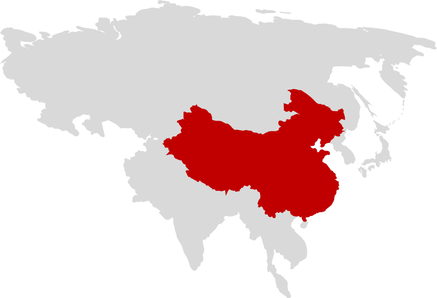
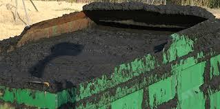
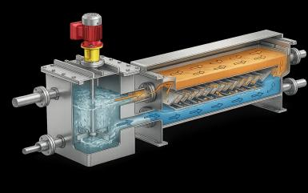
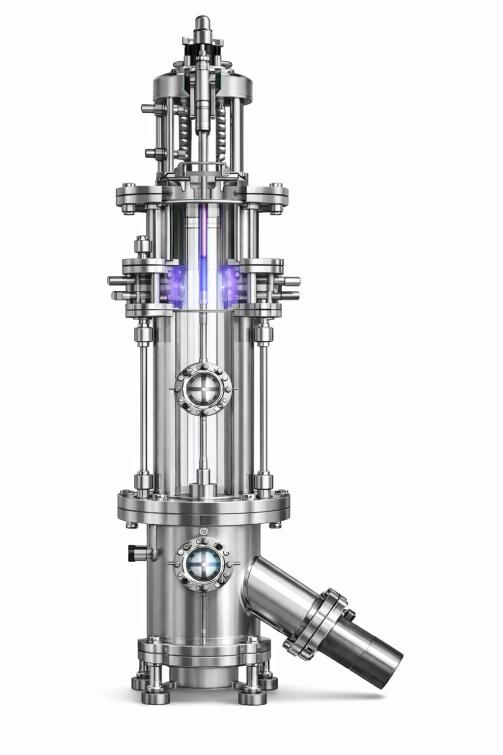
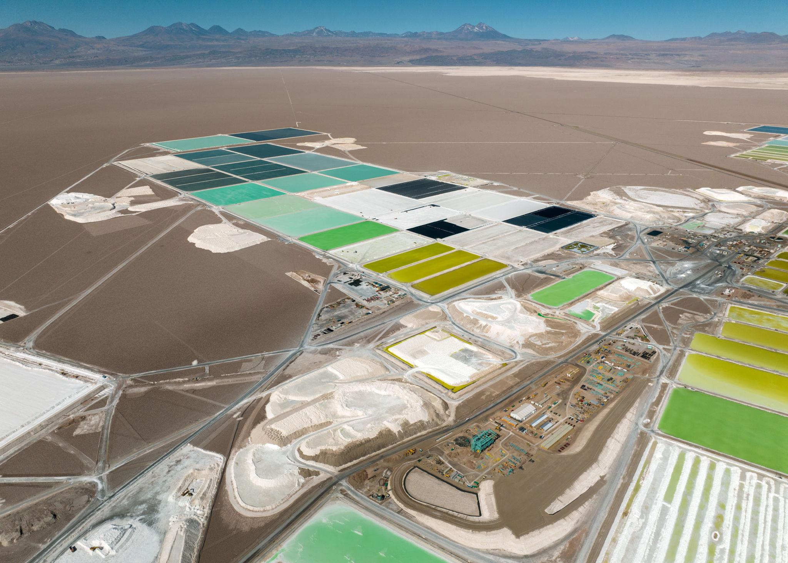
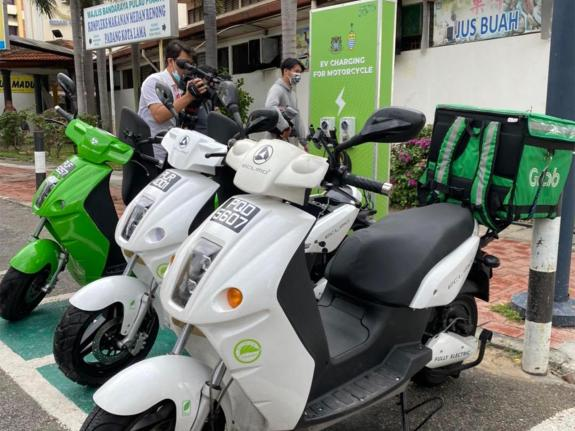
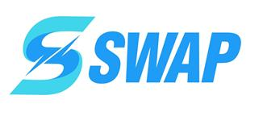
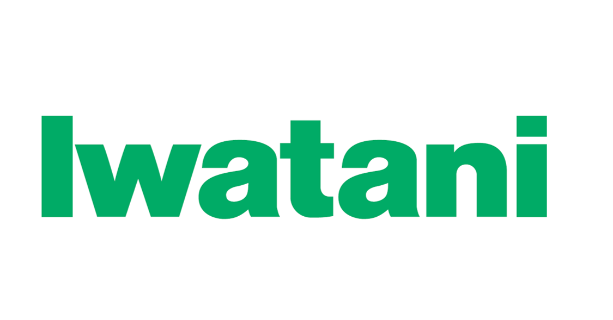
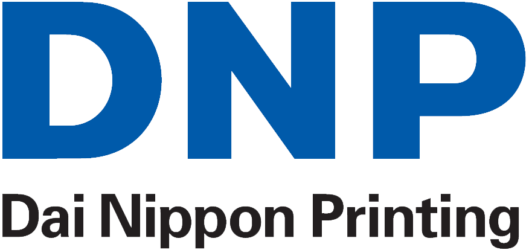

지속가능한 배터리 재활용을 위한
화학소재 및 친환경 차세대 공정기술
COMPANY
기업 소개
기업명
주식회사 코솔러스
대표자
김성현
임직원
27명
소재지
대한민국 전주, 익산, 완주, 군산
비전
사용 후 배터리 핵심광물 회수를 위한 혁신 화학소재와 친환경 공정 기술을 통해, 인류의 지속가능한 미래를 선도하는 글로벌 리더로 도약

COSOLUS 연구 현장
2
BACKGROUND
배터리 밸류체인의 환경·지정학적 리스크

Claim A — 글로벌 공급망 집중도
19/20
전략광물 20개 중
정제 1위 품목 수
정제 1위 품목 수
70%
전략광물 정제
평균 점유율
평균 점유율
89%
글로벌 블랙매스
처리 비중
처리 비중
Claim B — 환경·사회적 비용
133t
니켈 1톤당
발생 폐기물
발생 폐기물
채굴 기반 공급망은 환경부하와 사회적 비용을 동반합니다 — 채굴 산업의 노동·인권 문제도 함께 제기되고 있습니다.

Source: IEA, Global Critical Minerals Outlook 2025; Benchmark Mineral Intelligence, China's Battery Recycling Dominance, 2025; Earthworks, Filtered Tailing in Indonesia, 2026
3
BACKGROUND
북미 ESS 시장, 고성장의 변곡점
시사점
에너지저장장치(ESS) 시장의 고속 성장은 배터리 핵심광물 수요를 빠르게 증가시켜, 재활용을 통한 안정적 원재료 공급의 중요성을 더욱 키우고 있습니다.
Source: SNE Research (2023); Mirae Asset Securities Research Center (Jan. 2026); Korea Automotive Technology Institute (KATECH), Mobility Insight (Apr. 2024; citing SNE Research)
4
BACKGROUND
순환경제 비즈니스 모델
원재료 수급
♻︎
폐자원으로부터 핵심 광물을 확보해 배터리 원재료 수요부족 문제를 해결합니다.
환경 영향 저감
⚖︎
유해물질 억제와 온실가스 감축을 통해 환경 오염을 저감합니다.
신공급망 구축
제조에서 재활용으로, 다시 제조로 이어지는 순환 구조로 신공급망을 구축합니다.
5
BACKGROUND
1세대 공정의 한계와 코솔러스의 솔루션
1세대 공정의 한계

- 1낮은 선택성
- 2상분리 불안정
- 3부산물 과다발생(망초 등)
코솔러스 1.5세대 솔루션
고성능 추출제 — RECYION Series
기존 추출제(예: D2EHPA) 대비 재활용 효율 개선

소재 및 공정 개선을 통해 1세대 공정의 한계를 해결합니다.
6
TECHNOLOGY
고성능 추출제 — 경쟁사 대비 공정 효율
| 비교 기준 | COSOLUS | 벨기에 S사 | 중국 K사 |
|---|---|---|---|
| 공정시간 | 기준(Baseline) | COSOLUS 대비 100% ↑ | COSOLUS 대비 50% ↑ |
| 첨가제 사용량* | 기준(Baseline) | COSOLUS 대비 10% 이상 ↑ | COSOLUS 대비 5% 이상 ↑ |
*블랙매스 1톤당 첨가제 사용량 기준. 공정시간 비교값은 원문 인접 문단 서술 및 첨가제 행의 대소 패턴(벨기에>중국)과 교차검증해 재구성(수치 자체는 원문 그대로, 회사↔수치 배치만 재구성, 신뢰도 중간-높음).
7
TECHNOLOGY
추출단수 저감이 만드는 CAPEX·OPEX 경제성
Core Technology → 추출단수 1단 저감 (COSOLUS 4단 vs 기존 5단, 20% 감소)
CAPEX 경제성
2~5%
추출 효율 개선
추출 단수 1단 저감 → CAPEX 경제성 확보
OPEX 경제성
4,800t/년
망초 저감 (5% 이상)
대한민국 배터리 재활용 업체 연간 니켈 16,000톤 생산 기준 — 기존 추출제(5단·3.6t) 대비 COSOLUS 추출제(4단·3.3t) 적용 시
8
TECHNOLOGY
직접리튬추출(DLE) — 재활용 공정 안에서 완성
COSOLUS 재활용 공정 흐름
전처리
침출 · 불순물 제거
① Mn 추출
② Co 추출
③ Ni 추출
④ Li 추출
역추출
기존 DLE(증발법)와 비교

기존 DLE(증발법)는 1단계의 증발 농축 기반 공정으로 리튬만 회수하며 회수율은 3.12%에 그칩니다. COSOLUS는 NCM 스크랩 재활용 공정 안에서 Mn·Co·Ni·Li을 모두 순차 회수합니다.9
TECHNOLOGY
DLE 기술 동향 비교
| 구분 | 흡착제 | 추출제 | 분리막 | 전기화학 |
|---|---|---|---|---|
| 작동원리 | 이온 흡착·탈착 | 액-액 추출 | 이온 선택 투과 | 전기화학 분리 |
| 기술성숙도(TRL) | TRL 9 · 상용화 | TRL 4~5 | TRL 4~5 | TRL 3~4 |
| 장점 | 검증된 상용 공정 | 선택성·연속운전 | 첨가제 소모 적음 | 첨가제 최소화 |
| 단점 | 낮은 선택성 | 추출제 소모 | 막 오염·수명 관리 | 낮은 성숙도 |
Source: Desalination, 2024, 575, 117249
10
TECHNOLOGY
DLE 핵심 경쟁력 — 추출제·분리막 결합 기술
>90%
리튬 재자원화율(목표)
<5,500원/kg
COSOLUS DLE 공정비용*
*리튬선물 가격이 약 44,100천원/ton 수준일 때 재활용 목표 기준
구성요소별 기여도 — 재자원화율 개선
분리막 & THz 기술 적용
3% → 90%
핵심소재만 적용
3% → 50%
추출제-분리막 결합의 핵심 강점
- 1추출제와 리튬이온(Li⁺) 간 액-액 접촉을 통한 빠른 물질 전달
- 2추출제의 화학적 결합 + 분리막의 공간적 분리로 우수한 재활용 효율
- 3액상 공정을 통한 용이한 연속 운전
- 4분리막 기반 농축을 통한 첨가제 소모량 감소
11
TECHNOLOGY
친환경 차세대 배터리 재활용 공정(2세대)
친환경 차세대 배터리 재활용 공정 (System / Process Title)
① COSOLUS 유도가열
고온 유도가열 처리
균일한 온도 분포로 신속 처리
② 전처리 공정
투입 소재 전처리
후속 공정 위한 조건 정리
③ 블랙매스 생성
양극재용 · 음극재용 분리
폐흑연 처리 포함
④ COSOLUS 부유선별
고순도 소재 분리·회수
경제성·양산성 확보
Output — 고순도 정제흑연 + 코발트·니켈 회수. 경제성·친환경성·양산성을 동시에 확보한 2세대 공정입니다.
12
TECHNOLOGY
2세대 공정의 가격·기술 경쟁력
| 비교 기준 | 기존 소성로(Pusher Kiln) | COSOLUS(유도가열) |
|---|---|---|
| 공정시간 | 10시간 이상 | 1분 이내 |
| 승온 속도 | 기준(Baseline) | 200배 빠름 |
| 에너지 투입 | 기준(Baseline) | 432 Wh/kg (64% 절감) |
| 재생흑연 순도 | 낮은 온도 정밀도 | 99% 이상, 낮은 부반응 |
| 시설 투자비용 | 높음 | 상대적으로 낮음 |
추가 근거: 건식환원에 의한 Co 회수 순도 >95%, PCT 2건 출원
13
EXECUTIVE SUMMARY
투자 포인트
기술력
최상위 수준 기술 경쟁력
추출제 최상위 수준의 합성·정제 기술 / 친환경 공정 기술(건식환원·유도가열) / Closed-loop system 합성·공정 기술로 환경부담 최소화
사업화 방향
PoC부터 신공급망 구축까지
(1.5세대 RECYION Series) XX하이텍, XX코 등 현장적용 고려 PoC 진행 중 / (2세대 친환경 공정기술) XX자동차 연계 신공급망 구축, 일본·인도네시아 시장 진출(파일럿 기술검증 후 JV 설립)
투자라운드
Series A2 · 80억원
목표 투자유치 금액
투자금 사용 계획
글로벌 진출을 위한 국외법인 설립 및 운영 / 공장 건설을 위한 토지 구매 및 건축 비용(추출제 CAPA, 공정파일럿)
14
MILESTONE
일본·인도네시아 시장 진출
인도네시아
전기자전거 업체 1대주주와 투자 논의 진행 중


일본
현지투자사·재료업체 등과 투자 논의 진행 중
아래 로고는 특정 파트너십을 단정하는 것이 아니라 일본 배터리·소재 생태계 맥락을 보여주기 위한 참고 이미지입니다.


15